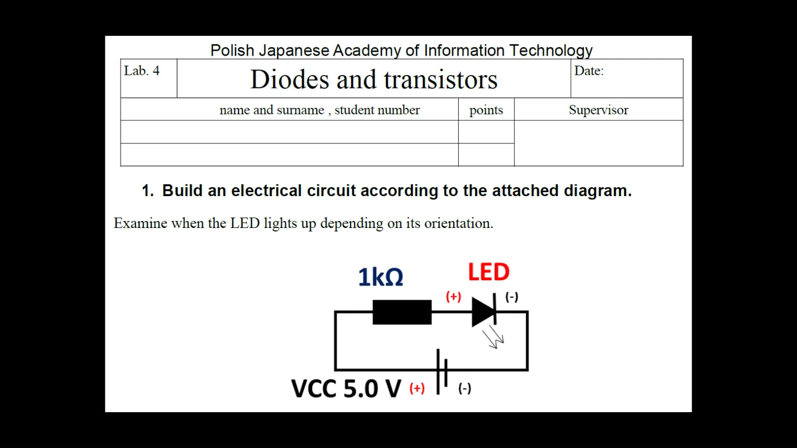
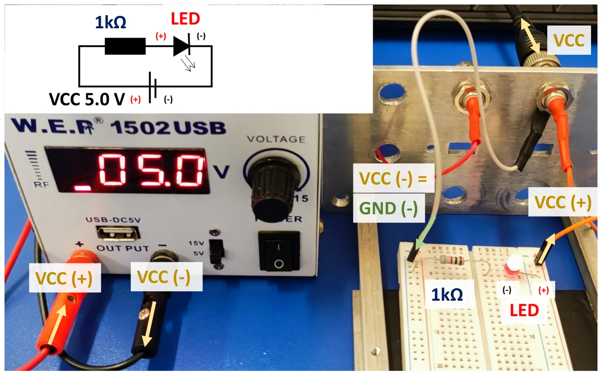
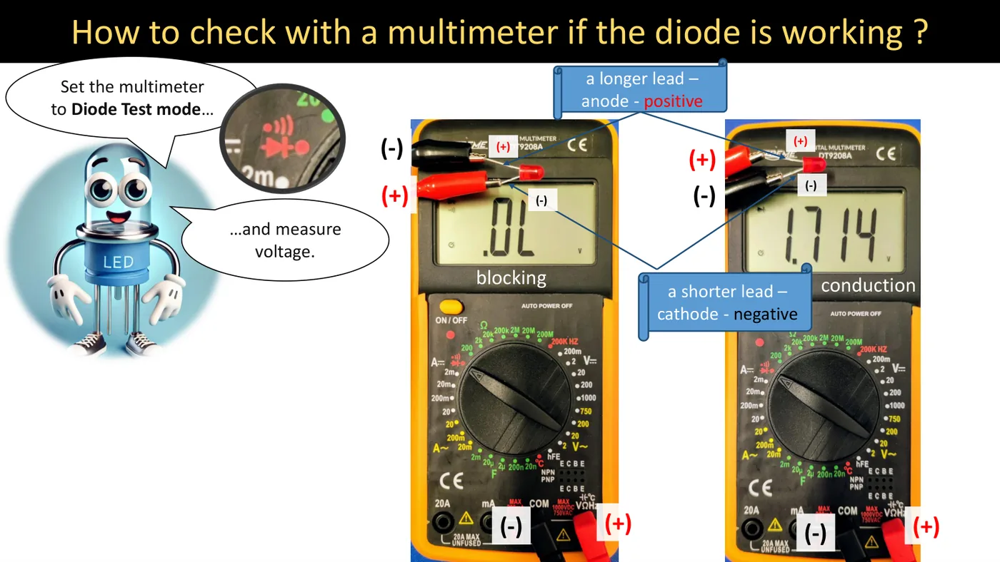
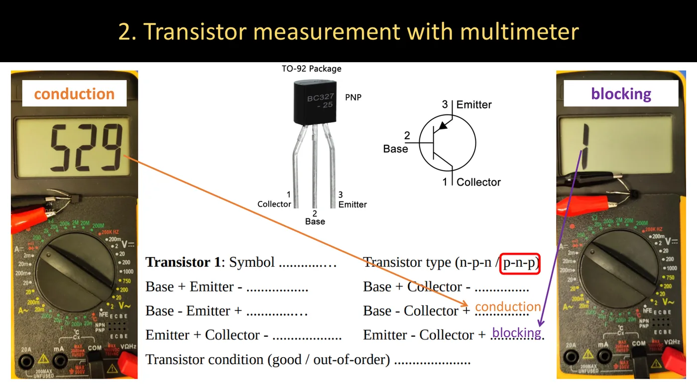
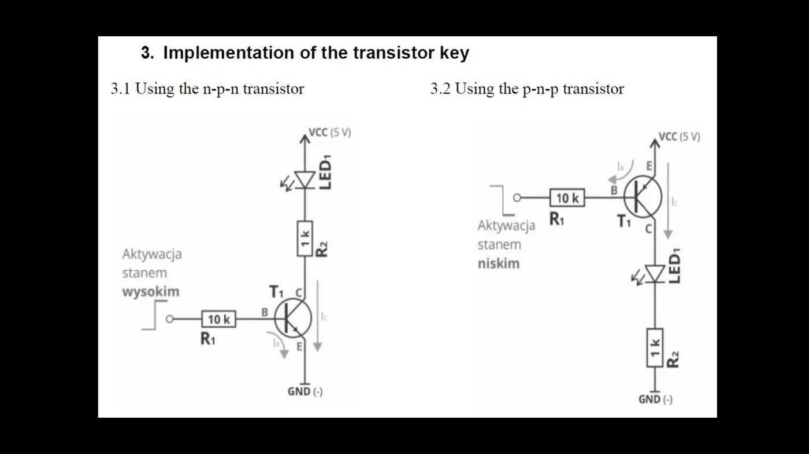
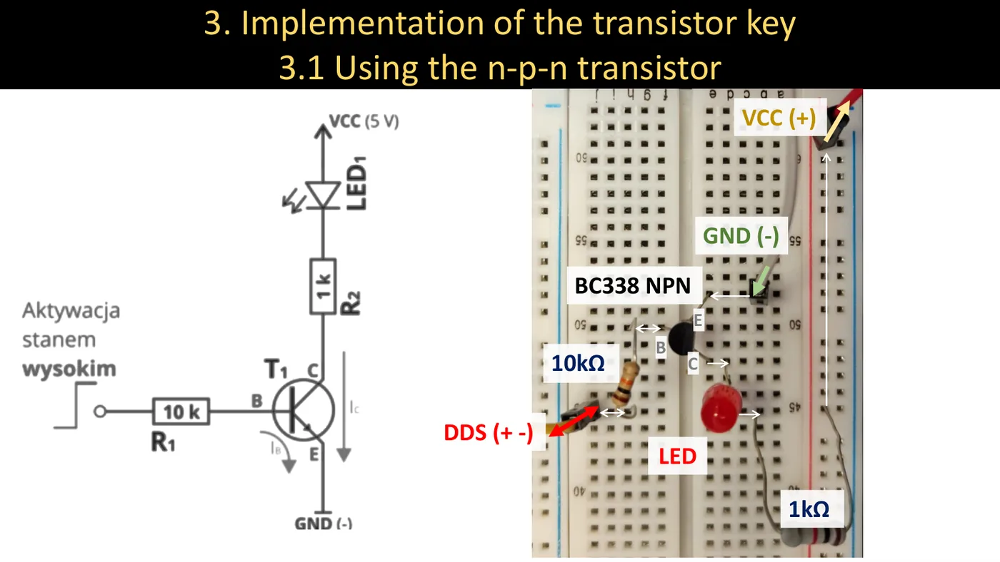
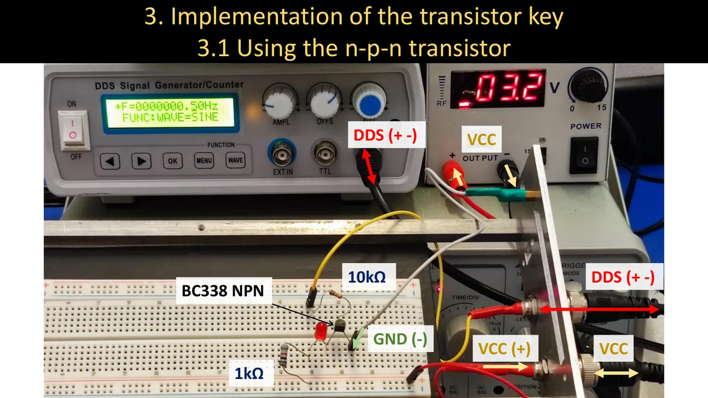
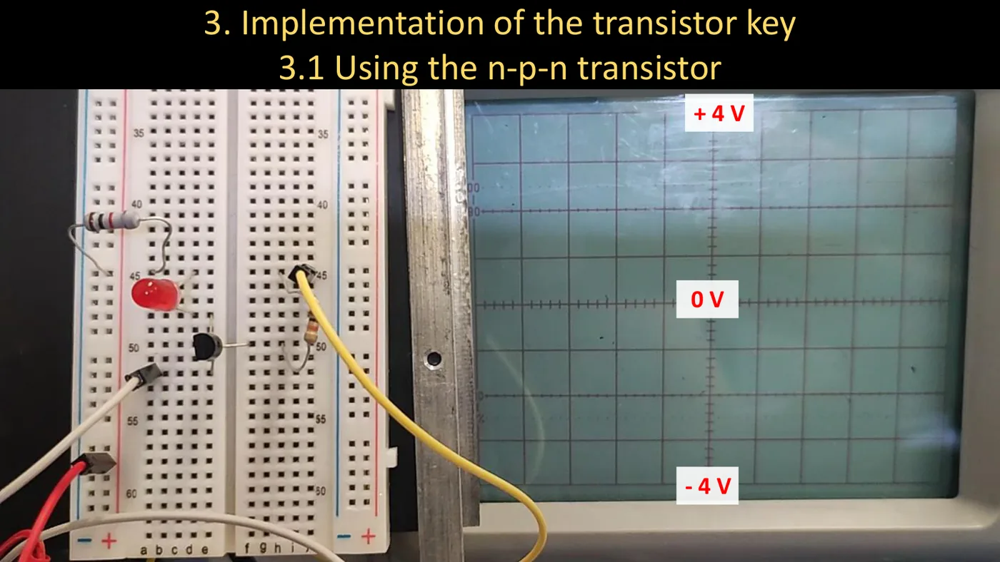
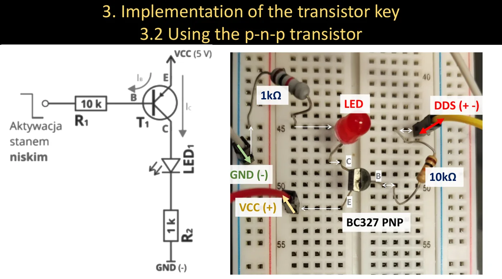
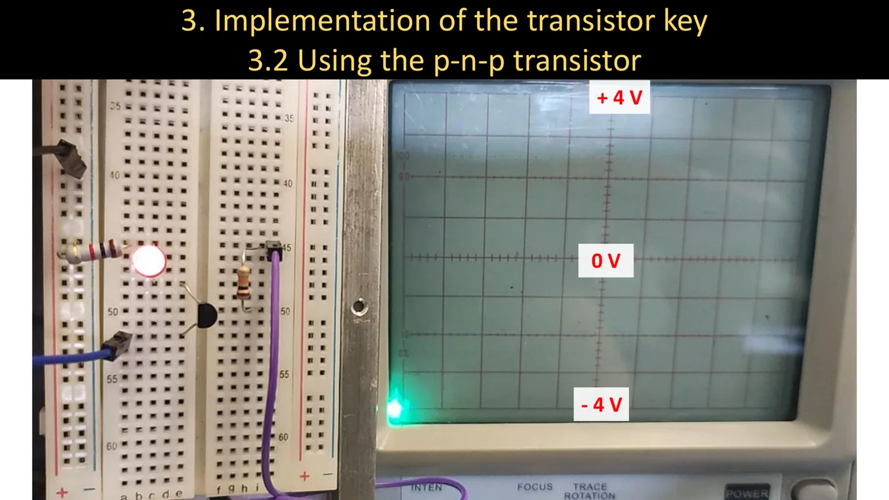

What you need to know before the class
- The p-n junction, the diode, NPN and PNP transistors — lecture 4 (Quick summary).
- How the breadboard and the multimeter work — lab 1.
From lecture 1 (2026/27)
"The fifth lab will be devoted to transistor switches. Sometimes we have to connect a larger device to a microcontroller, one that needs larger currents — such switching elements are then necessary."
Task 1 — an LED in a circuit


You build the simplest circuit: 5 V supply → 1 kΩ resistor → LED → ground and check in which orientation the diode lights up.
Step by step
- Identify the LED's leads: the longer lead is the anode (+), the shorter one the cathode (−). The flat side of the case also marks the cathode.
- On the breadboard connect the 1 kΩ resistor and the LED in series.
- Set 5 V on the supply. Supply plus — to the resistor, minus (ground) — to the diode.
- Switch the power on. Is it lit? Write down how the diode is oriented.
- Switch the power off, turn the diode round, switch on again. Write down what changed.


Result: the diode lights only when the anode is on the plus side (forward direction). Reversed — it stays dark (reverse direction).
What the resistor is for
Once the threshold voltage is exceeded, a diode conducts "without limit" — without a resistor the current would grow so much that the LED would burn out. The resistor sets the current:
I = Usupply − ULEDR = 5 − 1.71000 ≈ 3.3 mA
(1.7 V is the forward voltage of the red LED in the photo below.)
Checking a diode with the multimeter


Step by step
- Set the multimeter dial to diode test (the diode symbol).
- Red lead (+) to the anode (longer lead), black (−) to the cathode → the meter shows the forward voltage (about 1.7 V for a red LED). The diode is fine and conducts.
- Swap the leads → the meter shows over-range (".0L" or "1"). The diode does not conduct — as it should.
If the diode conducts both ways or neither way, it is damaged.
Task 2 — measuring a transistor with the meter
A bipolar transistor is, roughly, two diodes sharing the base: one between base and emitter, the other between base and collector. By checking them with the diode test you can find the transistor type and whether it works.


In class there are two transistors in the TO-92 package: BC338 (NPN) and BC327 (PNP). The pinout (from the datasheet): 1 — collector, 2 — base, 3 — emitter.
Step by step
- Multimeter on diode test.
- Take six measurements — every pair of leads in both directions. "+" is the red lead, "−" the black one.
- For each write P (conducting — the meter shows about 0.5–0.7 V) or Z (blocking — "1" / ".0L"). (P and Z are the letters used on the Polish form: przewodzenie / zaporowo.)
- From the table decide the type (n-p-n / p-n-p) and the condition of the transistor.
This is what a completed table looks like for a good transistor:
| Measurement | NPN (BC338) | PNP (BC327) |
|---|---|---|
| Base + / Emitter − | P | Z |
| Base − / Emitter + | Z | P |
| Base + / Collector − | P | Z |
| Base − / Collector + | Z | P |
| Emitter + / Collector − | Z | Z |
| Emitter − / Collector + | Z | Z |
In plain words
In an NPN transistor the base is p-type — it conducts when the base has the plus. In a PNP the base is n-type — it conducts when the base has the minus. Between emitter and collector it should never conduct.
A transistor is faulty if a junction conducts both ways, conducts neither way, or if there is conduction between emitter and collector.
Task 3 — the transistor switch
The transistor should work as a switch for an LED, controlled by the generator signal.


3.1 n-p-n transistor (BC338) — turned on by a high level
The circuit: VCC → LED → 1 kΩ → collector; emitter → ground; base ← 10 kΩ resistor ← generator.


Step by step
- Plug in the BC338 so that every lead is in a separate breadboard column.
- Connect the emitter to ground (GND).
- Connect the 1 kΩ resistor to the collector, the LED's cathode to the resistor, and the LED's anode to the supply plus (VCC).
- Connect the 10 kΩ resistor to the base; its other end is the control input.
- Feed the generator signal (DDS) to the control input. Generator ground — to the common ground.
- Set a very low frequency on the generator (e.g. 0.5 Hz) so the blinking is visible to the naked eye.
- Watch the same signal on the oscilloscope and note at which signal level the LED is lit.




Result: the LED is lit when the control signal is high — current flows into the base, the transistor saturates and "shorts" collector to emitter.
3.2 p-n-p transistor (BC327) — turned on by a low level
Everything is "upside down": emitter → VCC; collector → LED → 1 kΩ → ground; base ← 10 kΩ ← generator.




Result: the LED is lit when the control signal is low — then the base is at a lower potential than the emitter and base current can flow.
| NPN (BC338) | PNP (BC327) | |
|---|---|---|
| Emitter | to ground | to supply plus |
| Load (LED + 1 kΩ) | between plus and collector | between collector and ground |
| Turns on when the base signal is | high | low |
| Condition | UB about 0.6 V above UE | UB about 0.6 V below UE |
How do we know the transistor is "enough"
For the NPN switch with a +4 V signal: base current IB = 4 − 0.610 000 = 0.34 mA. With a gain β ≥ 100 the transistor could pass as much as 34 mA. The LED with its 1 kΩ resistor needs only about 3 mA — so the transistor is deeply saturated and behaves like a closed switch. That is the point of a switch: there should be base current "to spare".
Practice tasks
1. Choosing a resistor for an LED
A 9 V supply and a green LED with a forward voltage of 2.2 V. We want about 5 mA. Which resistor should you pick from: 1 kΩ, 1.5 kΩ, 2.2 kΩ? What current will flow?
Show solution
R = 9 − 2.20.005 = 1360 Ω. The nearest larger value is 1.5 kΩ (larger = safer).
Current: I = 6.81500 = 4.5 mA.
2. Identify the transistor
The diode test gave: B+/E−: 0.652 V; B−/E+: "1"; B+/C−: 0.648 V; B−/C+: "1"; E+/C−: "1"; E−/C+: "1". What type is it and is the transistor good? And what if, for another transistor, E+/C− and E−/C+ both give 0.02 V?
Show solution
It conducts when the base has the plus → p-type base → an NPN transistor. Both junctions conduct one way, nothing between E and C → good.
The second transistor: conduction between emitter and collector in both directions (almost zero volts) means a short — the transistor is damaged.
3. Will the switch saturate?
An NPN switch: control signal 5 V, base resistor 22 kΩ, β = 150. Load: an LED (2 V) with a 470 Ω resistor, powered from 5 V. Is the transistor saturated? What if the base resistor were 1 MΩ?
Show solution
IB = 5 − 0.622 000 = 0.2 mA → the transistor "can" pass up to 150 · 0.2 = 30 mA.
The load needs 5 − 2 − 0.2470 ≈ 6 mA (0.2 V is the voltage across a saturated transistor). 30 mA > 6 mA → saturated, the LED is at full brightness.
For 1 MΩ: IB = 4.4 µA → at most 0.66 mA → less than 6 mA → the transistor is not saturated, the LED barely glows.
4. A trap with the PNP switch
A PNP switch: emitter at +5 V, base resistor 10 kΩ. The control signal swings between 0 V and 4 V. Will the LED go out at 4 V?
Show solution
At 4 V the base is 1 V below the emitter — more than 0.6 V, so the base–emitter junction still conducts: IB = 5 − 0.6 − 410 000 = 0.04 mA, which with β > 100 is enough for several milliamperes. The LED will not go out.
To turn a PNP switch off, the control signal must get almost up to the emitter voltage (above about 4.4 V), or the supply must be lower than the high level. That is why in the class photos the supply is set to about 3 V while the generator signal reaches +4 V.
What costs points most often
- An LED plugged in with both leads in the same breadboard column (shorted).
- Transistor leads mixed up — look at the flat side of the case and at the datasheet drawing.
- No common ground between the generator, the supply and the breadboard.
- Too high a generator frequency: the LED blinks so fast that it seems to be on all the time.
- A missing resistor at the LED or in the base.